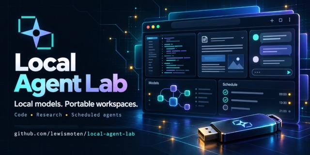

Local Agent Lab
Portable AI workspace

A private AI workspace for chat, code, images, and audio that runs on local models, even offline, so conversations never have to leave your device.
Executive summary
Why it exists
Most AI tools send every conversation to a frontier model in someone else's data center. I wanted privacy without depending on those models: a workspace that keeps working without an internet connection, keeps conversations on the device, and that someone could carry on a USB drive, even to a shared or public library computer, without buying a computer or subscribing to an AI service.
Outcome
A live demo you can try today. The README keeps an honest feature table with each current limit beside it: image editing, face animation, and production-quality mesh reconstruction are still open work, and there is no verified generative image-to-video.
My role
Author and maintainer.
Technical overview
How it works
A browser workspace built with React, TypeScript, and Vite for chat, coding, research, and scheduled agents. It runs small models in the browser or on a local web server through Ollama, so it works offline with no data leaving the device; API profiles are optional. Projects and conversations live in a folder or on a removable drive, with browser storage as a fallback. It also covers browser image generation, depth maps, SVG tracing, text to speech, voice profiles, and transcription, and it installs as a web app that can reload offline.
Hard parts
Browsers differ in what they allow. A folder workspace needs desktop Chrome or Edge, model capability varies by device, and scheduled agents only run while the app tab is open. Removing a drive safely needed an Eject workspace step that stops new work, waits for active file operations, and unloads browser models. Nothing downloads automatically; optional engines and models are fetched on request and can resume.